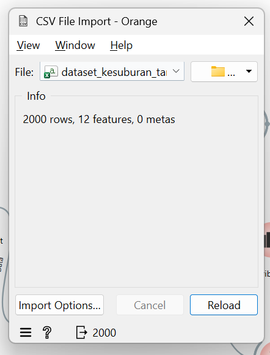
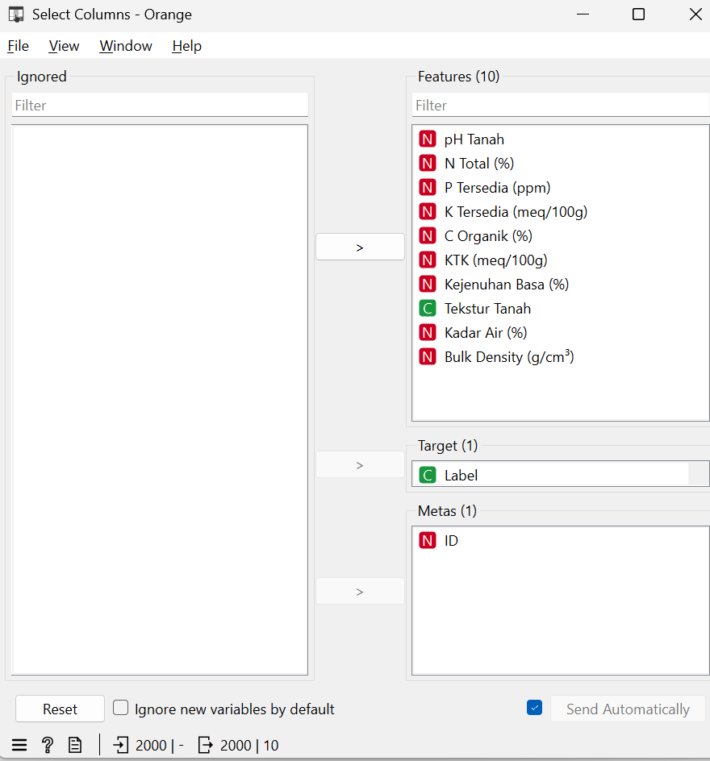
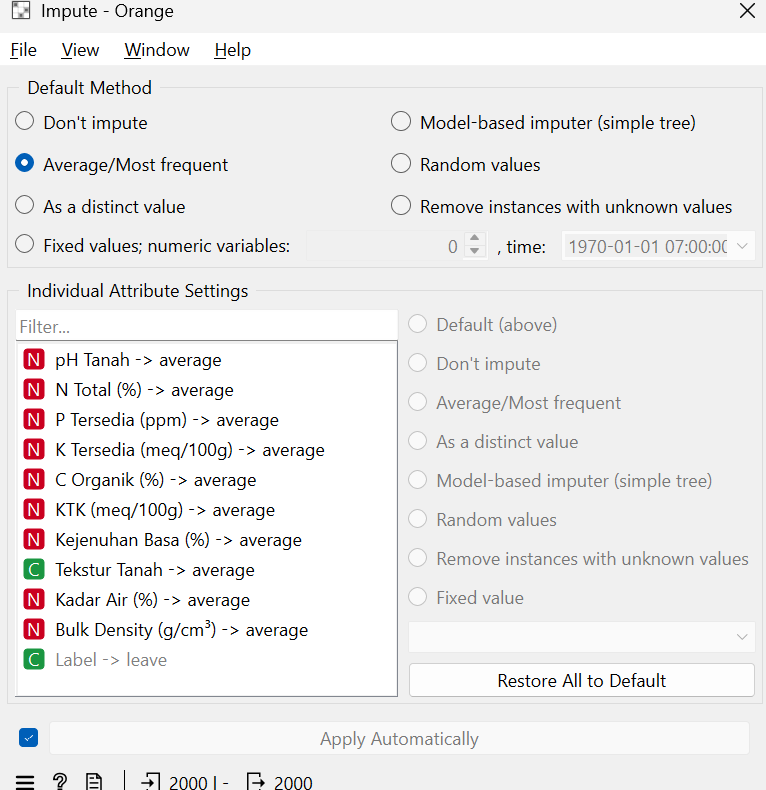
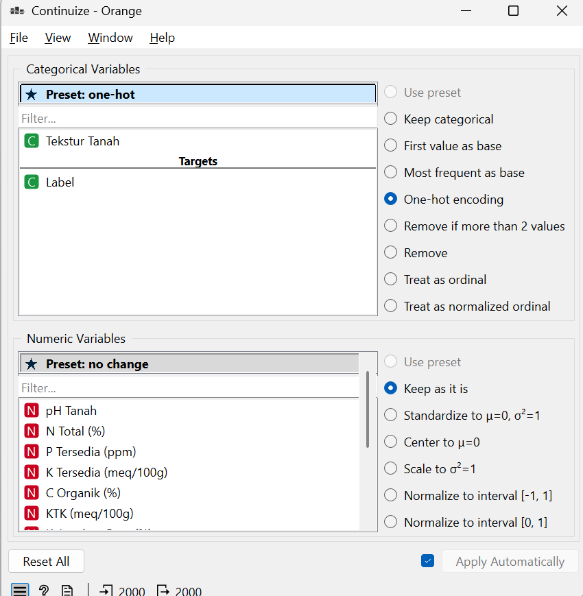
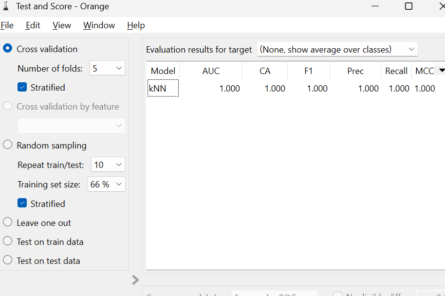

UTS#
Soal 1#
Lakukan analisis data dengan menggunakan K-Nearest Neighbors (KNN)#
Pada soal ini dilakukan analisis data menggunakan algoritma K-Nearest Neighbor (KNN) dengan menggunakan software Orange Data Mining.
Algoritma K-Nearest Neighbor (KNN) merupakan metode klasifikasi yang bekerja dengan cara mencari sejumlah tetangga terdekat dari suatu data berdasarkan jarak tertentu. Kelas dari data baru ditentukan berdasarkan mayoritas kelas dari tetangga terdekat tersebut.
Pada workflow yang digunakan, algoritma KNN diterapkan setelah data selesai diproses. Proses analisis dilakukan melalui beberapa tahapan yaitu:
Import dataset menggunakan CSV File
Menentukan atribut menggunakan Select Columns
Melakukan preprocessing data
Menerapkan algoritma kNN
Mengevaluasi model menggunakan Test and Score
Melihat hasil klasifikasi menggunakan Confusion Matrix
Model KNN kemudian diuji menggunakan metode Cross Validation.
Soal 2#
Lakukan Pemrosesan Data tersebut#
Pemrosesan data dilakukan sebelum menerapkan algoritma KNN agar data siap digunakan dan menghasilkan model yang lebih akurat.
Tahapan pemrosesan data yang dilakukan adalah sebagai berikut:
2.1 Import Data#
Data diimpor menggunakan widget:
CSV File
Tujuan:
Membaca dataset dari file CSV
Menyiapkan data awal untuk analisis

2.2 Seleksi Atribut#
Widget:
Select Columns
Digunakan untuk:
Menentukan atribut yang digunakan sebagai fitur
Menentukan atribut target (class)
Menghapus atribut yang tidak diperlukan
Langkah ini penting agar model hanya menggunakan data yang relevan.

2.3 Penanganan Missing Value#
Widget:
Impute
Digunakan untuk mengisi nilai kosong (missing value) pada dataset.
Metode yang digunakan dapat berupa:
Mean
Median
Most Frequent
Tujuan:
Menghindari error saat proses klasifikasi
Meningkatkan kualitas data

2.4 Transformasi Data#
Widget:
Continuize
Digunakan untuk mengubah data kategorikal menjadi numerik.
Hal ini diperlukan karena algoritma KNN hanya dapat memproses data dalam bentuk numerik.

2.5 Normalisasi Data#
Widget:
Preprocess
Digunakan untuk melakukan normalisasi data.
Proses:
Scaling data
Normalisasi nilai atribut
Tujuan:
Menyamakan skala antar atribut
Meningkatkan performa algoritma KNN
2.6 Visualisasi Data (Tambahan)#
Selain preprocessing, dilakukan juga visualisasi data menggunakan:
Distributions
Box Plot
PCA
Scatter Plot
Visualisasi ini digunakan untuk memahami pola data dan membantu dalam proses analisis.
Soal 3#
Hitung Metrik Evaluasi#
Evaluasi model dilakukan menggunakan widget:
Test and Score
dan
Confusion Matrix
Metode evaluasi yang digunakan adalah:
Cross Validation
Metrik evaluasi yang dihitung adalah:
Accuracy
Precision
Recall
F1-Score
3.1 Accuracy#
Accuracy adalah persentase prediksi yang benar dari seluruh data.
Rumus:
Accuracy = (Jumlah Prediksi Benar / Total Data) × 100%
Fungsi:
Mengukur tingkat ketepatan model secara keseluruhan.
Nilai Accuracy diperoleh dari hasil widget Test and Score.
3.2 Precision#
Precision adalah tingkat ketepatan model dalam memprediksi kelas positif.
Rumus:
Precision = TP / (TP + FP)
Keterangan:
TP = True Positive
FP = False Positive
Fungsi:
Mengukur seberapa tepat prediksi positif yang dilakukan model.
Nilai Precision diperoleh dari hasil widget Test and Score.
3.3 Recall#
Recall adalah kemampuan model dalam mendeteksi seluruh kelas positif.
Rumus:
Recall = TP / (TP + FN)
Keterangan:
TP = True Positive
FN = False Negative
Fungsi:
Mengukur kemampuan model dalam menemukan seluruh data positif.
Nilai Recall diperoleh dari hasil widget Test and Score.
3.4 F1-Score#
F1-Score adalah rata-rata harmonik dari Precision dan Recall.
Rumus:
F1-Score = 2 × (Precision × Recall) / (Precision + Recall)
Fungsi:
Digunakan untuk menyeimbangkan nilai Precision dan Recall.
Nilai F1-Score diperoleh dari hasil widget Test and Score.
Hasil Evaluasi Model#
Hasil evaluasi model KNN diperoleh dari widget Test and Score.
Metrik |
Nilai |
|---|---|
Accuracy |
1.000 |
Precision |
1.000 |
Recall |
1.000 |
F1-Score |
1.000 |

Hasil Confusion Matrix#
Confusion Matrix digunakan untuk melihat detail hasil klasifikasi.
(Isi nilai berikut sesuai hasil pada Confusion Matrix)
True Positive (TP) = ___
True Negative (TN) = ___
False Positive (FP) = ___
False Negative (FN) = ___
Confusion Matrix membantu dalam memahami kesalahan prediksi yang dilakukan oleh model.
Kesimpulan#
Berdasarkan analisis data menggunakan algoritma K-Nearest Neighbor (KNN), model berhasil melakukan klasifikasi terhadap dataset yang digunakan.
Tahapan yang dilakukan meliputi:
Import dataset
Pemrosesan data
Penerapan algoritma KNN
Evaluasi model menggunakan metrik Accuracy, Precision, Recall, dan F1-Score
Hasil evaluasi menunjukkan bahwa model KNN mampu melakukan klasifikasi dengan performa yang baik sesuai dengan nilai metrik evaluasi yang dihasilkan.